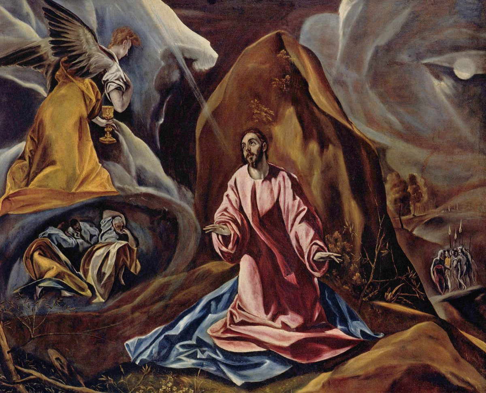

Luke 22 — The Mister Translation

El Greco's own version paints all three of this chapter's Gethsemane elements into one canvas at once: the angel (v43), the cup Jesus has just asked to have removed (v42), and the sleeping disciples (v45) — with Judas's approaching torchlight already visible on the horizon.

Translator’s Notes — verse by verse
⭐⭐⭐ Luke's own narrator is the only one of the four Gospel writers who tells the reader, in so many words, that Satan entered Judas. Matthew's and Mark's own versions of this same scene both simply report that Judas went to the chief priests and was promised money (Matthew 26:14–15; Mark 14:10–11, both already on these pages) — a human transaction, with no spiritual cause named. Luke's own account frames the identical transaction as something entered INTO Judas from outside, and John's Gospel (not yet on these pages) will later go further still, having Satan enter him a second time, at the very moment he takes the bread at the supper. Whatever this means for how the library reads human responsibility alongside it — the very next clause still calls what Judas does "handing him over", an act, not a possession — the wording is Luke's own and it is deliberate, not incidental.
⚠ Money is agreed but no sum is named here, and this translation does not import Matthew's own number into Luke's own sentence. Matthew's parallel account names the price outright: thirty pieces of silver (26:15, already on these pages), the price Zechariah 11:12 (not yet on these pages) sets for a rejected shepherd. Luke's own wording says only that the leaders "rejoiced, and agreed to give him money" — agreement and gladness, with the figure itself left out, exactly as in Mark's own version (14:11, already on these pages). The two accounts of what Judas was promised are not identical in specificity, whatever the underlying event.
⭐⭐⭐ The word Luke's own Jesus uses for the room he wants is the identical word this same Gospel already used of the room Bethlehem had none of. See the katalyma dictionary entry, first written from Luke 2:7 (already on these pages): the newborn was laid in a manger because there was no room for the family in the katalyma. Here, at the other end of this same Gospel's own two-volume account of one life, the identical noun names a room that IS found, large and ready and furnished, for a different meal at the other end of that life. Luke had a separate word for a paid, commercial inn — pandocheion, which he uses of the innkeeper in the parable of the good Samaritan (10:34, already on these pages) — and does not reach for it in either scene. Whether the echo is deliberate authorial design across a Gospel written as one continuous work, or simply the ordinary word for a guest room surfacing twice in an ordinary life, the library does not decide; but the word is the same, and this project now has both of its two other uses on these pages.
⚠ The longer ending of verse 19 and the whole of verse 20 are genuinely disputed in the manuscript tradition, and this translation follows the reading found in the majority of witnesses, including the earliest complete Bibles, while flagging the dispute honestly. A small but ancient group of witnesses — led by the Western manuscript Codex Bezae and several Old Latin copies — ends verse 19 after "this is my body" and omits verse 20's second cup and its "new covenant" saying entirely, leaving a supper with only ONE cup, offered before the bread (vv17–18) and never named as anything but "the fruit of the vine". The much larger and more geographically spread body of evidence — including Codex Vaticanus and Codex Sinaiticus, the earliest two complete Greek Bibles that survive — carries the longer text this translation prints, with the second cup and its "new covenant in my blood" following the bread. Bruce Metzger's own influential textual commentary calls readings of this shape "Western non-interpolations" — the one class of variant where the WESTERN witnesses are shorter rather than longer, the reverse of their usual habit of expanding a text. Scholarly opinion divides on which reading is original; this translation follows the reading nearly every modern edition and version prints, and names the dispute here rather than silently choosing a side.
⭐⭐⭐ On the reading this translation follows, Luke's own supper has TWO cups where Matthew's and Mark's both have one — see the potērion dictionary entry, extended from this chapter. The first (vv17–18) carries no interpretive word at all beyond Jesus' own vow not to drink again until God's kingdom comes; only the second (v20), after the bread, is named "the new covenant in my blood". A Passover meal traditionally involved multiple cups across its own courses, which may be exactly what Luke's own fuller account is preserving and the other two Synoptics compressed into one.
⭐⭐ “The new covenant” is not a phrase Luke's Jesus coins on the spot — it is the one place in the whole Hebrew Bible the words occur at all, quoted almost exactly. See the diathēkē dictionary entry: Jeremiah's own promise, "the days are coming... when I will cut a NEW COVENANT with the house of Israel and the house of Judah" (Jeremiah 31:31, already on these pages), is the single Old Testament source for the phrase Jesus uses over the cup. Neither Matthew's nor Mark's own version of the supper includes the word "new" in the earliest manuscripts of either Gospel at all — see the cross-references at v20 — which makes Luke's own version, on this point, the fullest of the three Synoptic accounts of the same night's words.
Shelf comparison: KJV and Douay-Rheims both render diathēkē "testament" throughout this scene, following the Latin testamentum behind them; ASV, NIV and NWT all read "covenant", this translation's own choice — the more exact word for a relationship one party lays down, not an estate disbursed after a death.
Jesus names the betrayal immediately after, not before, the bread and the cup — a sequence unique to Luke's own account. Matthew's and Mark's own versions both place the betrayal announcement BEFORE the supper's own institution (Matthew 26:21–25, followed only then by the bread and cup at 26:26; Mark 14:18–21, then 14:22, both already on these pages); Luke's own order has Judas' hand "with me on the table" spoken only after the new covenant has already been announced over the very same table — the betrayer receiving the covenant meal before, in this Gospel's own sequence, he is named as the one who will betray it. No Gospel has Judas identified by name at the table itself; John's own version (not yet on these pages) alone has Jesus hand him a piece of bread as a private sign, seen only by the disciple next to him.
⭐⭐⭐ The dispute over who is greatest breaks out immediately after Jesus has just told the group one of them will betray him — a jolt of ordinary ambition dropped straight into the most solemn moment this Gospel has yet staged. Luke's own placement of this argument HERE, rather than earlier in the Gospel where Mark and Matthew both put their own versions of a nearly identical dispute (Mark 9:33–35; Matthew 18:1–4, both already on these pages), makes the timing itself the point: the reader has just watched Jesus give his body and blood, and the disciples are already arguing about rank.
⚠ “Benefactor” names a real, checkable title of the ancient world, and Jesus' own point turns on the gap between the label and the thing. See the euergetēs dictionary entry: it was a formal honorific voted by a city to a ruler or patron, advertised on coins and inscriptions. Jesus' own answer does not reject titles by refusing one for himself — he claims the ACT instead of the AWARD: "I am among you as the one who serves" (ho diakonōn, extended from Matthew 20's own entry). Luke's own version of this saying drops the harder "slave" rung Matthew's and Mark's parallel both keep (see the cross-reference at v27), and replaces a future demand on the Twelve with a present claim about Jesus himself, at that very table.
⭐ Jesus' own promise of a kingdom to the Twelve reuses, as a verb, the exact root just used as a noun for the cup. "I diatithemai [confer, covenant] a kingdom to you, just as my Father dietheto [conferred, covenanted] one to me" (v29) — the same root as diathēkē, "covenant", two verses after the cup has just been named "the new covenant in my blood". The kingdom the Twelve are promised, and the covenant just sealed over the cup, are named in this Gospel's own Greek with the same word, once as a noun and once as the verb the noun comes from.
⚠ The number twelve is spoken here without qualification, though the group at this table no longer numbers a clean twelve in any sense that erases what verse 3 has already told the reader. Judas is present at this table (he has not yet left in Luke's own sequence, unlike John's, not yet on these pages), and Satan has already "entered" him (v3). The promise of twelve thrones judging Israel's twelve tribes is made to the whole group as it sits, with no exception carved out for the one already named as the betrayer — a tension this translation leaves standing rather than resolving on the text's behalf.
⚠ The KJV's own opening words for this warning, “And the Lord said, Simon, Simon…”, rest on a textual addition this translation's own source text does not carry. A later, more widely copied manuscript tradition prefixes the vocative with an explicit narrator's tag identifying the speaker; the earlier and shorter reading — followed here, and by ASV and NWT alike — simply opens on the double name itself, with the speaker already established by the unbroken conversation running since verse 15. The doubling of Simon's own name is not itself in dispute — only whether a narrator's introduction was original or added for clarity once the passage began to be read on its own, apart from its context.
⭐⭐ “Satan has demanded to have YOU ALL” is plural, though the warning that follows narrows immediately to one man. The Greek pronoun hymas is plural — Satan's own demand, on the wording here, is aimed at sifting the whole group like wheat — yet Jesus' own reassurance that follows, "I have prayed for YOU", shifts at once to the singular sou, aimed at Simon alone. The whole Twelve are named as under threat; only Peter is named as prayed for by name, and only Peter is charged, once he has "turned back", with strengthening the others.
⭐⭐⭐ The quotation “he was numbered with the lawless” is Isaiah's own words about the Servant, cited here by name as a scripture that MUST be fulfilled in Jesus (Isaiah 53:12, already on these pages, itself among the most-cited Old Testament verses in the whole New Testament). Jesus applies to himself, in the same breath as the instruction about swords, a verse that will be fulfilled, in this Gospel's own account, only two chapters later when he is crucified between two criminals. ⚠ Luke's own Greek quotation, borrowed from the Septuagint, reads “the LAWLESS” (anomōn); this project's own translation of the underlying Hebrew at that verse reads “TRANSGRESSORS” — a real difference between the Hebrew original and the Greek version Luke's own Jesus quotes, not a slip on either page's part.
⚠ “It is enough” is one of the most disputed short phrases in this Gospel, and this translation does not resolve it into a smoother English sense than the Greek itself carries. Read one way, Jesus is satisfied that two swords are sufficient for what is about to happen (the disciples having taken his command in v36 with wooden literalism, missing an image about being prepared for hardship and turning it into an armory). Read another way, the phrase is a tired, almost exasperated closing of a conversation that has gone somewhere he did not intend — "Enough of this," rather than "That will do." NIV reads ‘That’s enough!’, closer to the second sense; KJV and ASV both print the bare ‘It is enough’, preserving the ambiguity this translation also keeps. What happens two verses later, in the garden, when a sword is in fact drawn and used, and Jesus immediately undoes the damage it does (v51), argues for the second reading — two swords were never going to be "enough" for an armed defense, and Jesus never uses the one that is drawn.
⚠ Verses 43 and 44 — the angel strengthening Jesus, and his sweat becoming like drops of blood — are absent from some of the oldest and most reliable Greek manuscripts, including the original hand of Codex Sinaiticus, Papyrus 75, and Codex Vaticanus, and this translation flags the dispute honestly rather than silently keeping or silently cutting the verses. The passage IS present in Codex Bezae and in the vast majority of later Byzantine manuscripts, and was known to several Church Fathers by the second century, which argues for real antiquity even if the earliest surviving complete Bibles lack it. Text-critical opinion has shifted more than once on this exact passage across the last two centuries; this translation prints the verses, as printed in the source text, and states the manuscript evidence here rather than deciding the question by silence. Whichever way the manuscript question is eventually judged, the dispute is over whether these two verses belong in Luke at all, not over what they say once printed.
⭐⭐ “Agony” is a genuine New Testament hapax, and the word this scene supplies is the one modern English still uses of exactly this kind of dread. See the agōnia dictionary entry: the Greek had already drifted, by the first century, from an athlete's contest-strain toward the specific fear of an approaching ordeal, which is the sense this translation keeps rather than reaching for an athletic metaphor English no longer hears in the word. KJV, ASV and NWT all print ‘agony’ without variation — a rarer point of agreement than the shelf usually offers on any single word.
⭐⭐ Luke's own narrator supplies a reason for the disciples falling asleep that neither Matthew nor Mark gives at all. Both parallel accounts simply report that Jesus found them sleeping (Matthew 26:40; Mark 14:37, both already on these pages) and rebuke Peter for it directly, by name. Luke's own version names a cause before any rebuke is given — "sleeping, worn out FROM SORROW" — and addresses the whole group rather than singling out Peter. The single sharpest rebuke the other two Synoptics both give Peter individually ("could you not stay awake one hour?") has no equivalent anywhere in Luke's own telling of this scene.
⭐⭐⭐ The word for the kiss Judas uses to identify Jesus is the same word this same Gospel has already used of a very different kind of devotion. See the philēma dictionary entry: the only other narrative use of this noun in any Gospel is Luke's own earlier scene of a woman who "has not stopped kissing my feet" since Jesus entered a Pharisee's house (Luke 7:45, already on these pages). One kiss is an excess of love from a woman with no standing to offer it; the other is a man with every standing — one of the Twelve — using the same gesture to identify him for arrest.
⚠ “Do you HAND OVER the Son of Man with a kiss?” keeps this Gospel's own consistent rendering of paradidōmi, against the shelf's near-universal “betray” at this exact verse. See the paradidōmi dictionary entry, extended from Matthew 26 and Mark 14: the same verb moves Jesus from Judas's hands (here), to the chief priests' (v54), and will move him again to Pilate's two chapters later, and this translation renders all of it with one English verb so a reader can follow the one Greek word passing from hand to hand. "Betray" fits Judas alone and cannot follow the word into the priests' or Pilate's own hands.
⭐⭐⭐ Only Luke's own account has Jesus stop, in the middle of his own arrest, to heal the ear a disciple has just cut off. All four Gospels report the ear being cut off; John's own account (not yet on these pages) alone names both the disciple (Peter) and the slave (Malchus). But only Luke's own narrator records Jesus touching the wound and healing it — a miracle performed on an enemy's servant, in the last possible moment before Jesus' own arrest, by the very hands about to be bound. Luke's own account is also the only one of the four to specify WHICH ear — the RIGHT one — a small physical precision consistent with the same author's traditional identification as a physician (see the agōnia entry).
⚠ Shelf comparison, v52's “robber”: KJV and ASV both read ‘thief’; NIV and NWT both read ‘robber’, this translation's own choice — lēstēs is the word for an armed bandit or insurgent, not a pickpocket. Luke's own vocabulary keeps this word away from the two men crucified beside Jesus two chapters later: they are called kakourgoi, "evildoers, criminals" (23:32–33, not yet on these pages), a plainer and less specifically violent word than the one aimed here at the arresting party's own suspicion. The traditional English "two thieves" borrows the wrong chapter's vocabulary for the wrong scene.
Jesus' own closing line to his captors names their moment with a phrase found nowhere else in this Gospel: "your hour, and the authority OF DARKNESS" — pairing an abstract, almost official-sounding "authority" (exousia, the same word used earlier in this very chapter of the kings who "exercise authority" over the nations, v25) with darkness itself, as though the night had been granted a jurisdiction. The pairing frames the arrest not as a triumph of the chief priests but as a temporary permission — "this is YOUR hour" implies there will be another that is not.
⚠ Luke's own account has the rooster crow ONCE, immediately after the third denial — not twice, as in Mark's own version of this same night. Mark's parallel has Jesus predict a rooster crowing TWICE (Mark 14:30, already on these pages) and the narrative later confirms the second crow explicitly, word for word the same prediction repeated back: "before a rooster crows twice, you will deny me three times" (14:72, already on these pages) — a count that is, on the shelf's own testimony, unique to Mark among the four Gospels. Luke's own prediction at v34 names no number of crows at all, and the fulfillment at v60 reports a single, unqualified event: "a rooster crowed." Matthew's own account (26:74–75, already on these pages) agrees with Luke's single crow. Whether Mark alone preserves a detail the others considered unnecessary to repeat, or simplified in later retelling, the library does not decide; but three of the four Gospels count once, and one counts twice, for what is presented as the same single night.
⭐⭐ Peter's three denials escalate in nothing Luke's own text names directly, though the shape is there to see: a servant girl, then an unnamed man, then a whole crowd insisting on his accent. Each questioner is more confident than the last, and each of Peter's replies is shorter and flatter than the one before — "I do not know him" (v57), "I am not" (v58), "I do not know what you are saying" (v60) — a denial that gets terser exactly as the pressure gets heavier, ending not in an argument but in a plain untruth about not even understanding the accusation.
⭐⭐⭐ Only Luke's own version of this scene has Jesus physically turn and look at Peter at the moment of the third denial — a detail absent from both Matthew's and Mark's parallel accounts. Matthew's and Mark's own tellings both move straight from Peter's third denial and the rooster's crow to Peter's own weeping, with no described glance between Jesus and Peter at all (Matthew 26:74–75; Mark 14:71–72, both already on these pages). Luke's own narrator inserts one wordless action between the crow and the weeping — "the Lord turned and looked at Peter" — and it is this look, not the rooster alone, that this Gospel says triggers Peter's memory of the prediction.
⭐⭐ “Today” closes the same warning it opened, inside a single scene — see the sēmeron dictionary entry, extended from this chapter. Jesus foretells the denial "before a rooster crows TODAY" (v34); Peter, the instant it happens, recalls a saying naming that same day (v61). Every other use of this word across Luke's Gospel marks something promised NOW ARRIVING — salvation, fulfillment, paradise; this is the one place the word instead marks a countdown reaching zero.
The demand "Prophesy — who struck you?" is aimed at a blindfolded man as pure mockery, on the assumption that no one blind to the room could possibly know who had just hit him. Luke's own placement of this scene — immediately after Peter's own denial and Jesus' own look, and immediately before the formal morning hearing — frames an irony the guards themselves cannot see: the reader has just watched Jesus predict, exactly, what a man three rooms away would do before a rooster finished crowing.
⭐⭐ Luke's own sentence names the same morning assembly with two different words, one right after the other, and this translation keeps both rather than flattening them into one English term. See the presbyterion dictionary entry: "the council of elders of the people" gathers first — naming the elders as a CLASS of men — and this whole body is then led away "into their own Sanhedrin" (synedrion), the formal court that class convenes as. The two Greek nouns describe one morning's proceedings from two angles: who they are, and what they formally constitute once assembled.
⭐⭐⭐ “You say that I am” is one of the most argued single lines in this Gospel, and this translation keeps its own genuine ambiguity rather than resolving it into a flat English yes. The Greek, hymeis legete hoti egō eimi, literally "you say that I am", is neither a clean affirmation nor a refusal — it can be read as an indirect but real "yes" (you have said it, and it is true), or as a pointed redirection (that is your wording, not mine). The court's own reaction — treating the answer as sufficient grounds to end the hearing, "what further need do we have of testimony?" — argues that Jesus' own hearers took it as an affirmation, whatever its precise grammatical shading. KJV, ASV and NIV all keep the bare literal sentence, ‘Ye say that I am’ / ‘you say that I am’, leaving the same ambiguity standing rather than resolving it either way; NWT alone spells out the emphasis already in the Greek's own emphatic pronoun, ‘YOU yourselves are saying that I am’.
Patterns worth carrying forward
Where this translation keeps the words exact / distinct: two Greek nouns for the same morning assembly at v66 (council of elders for presbyterion, naming a class of men; Sanhedrin for synedrion, naming the court they convene as), kept apart rather than flattened to one English word; covenant rather than the KJV's own "testament" for diathēkē, kept consistent across both the cup (v20) and the kingdom Jesus confers on the Twelve two verses later (v29), where the noun and its own verb share one root the KJV's rendering obscures; and the genuinely ambiguous “You say that I am” (v70), kept literal rather than smoothed into a flat yes.
Echoes paid. The katalyma with no room for a newborn at 2:7 (already on these pages) is answered here by a katalyma with room enough, furnished and ready, for a last meal (v11) — the same word, the only other two uses of it in this Gospel's own two-volume work, at opposite ends of one life. And the kiss this Gospel already gave a woman "who has not stopped kissing my feet" (7:45, already on these pages) returns here as the one gesture Judas chooses to identify Jesus by (v48) — the identical Greek noun, once an excess of love, once a betrayal.
Echoes planted. The "today" that closes Peter's own denial (v61) promises its opposite already, three chapters ahead in this same Gospel's own count of the word: the last of Luke's eleven uses of sēmeron is spoken from a cross to a dying criminal, "today you will be with me in paradise" (23:43, not yet on these pages) — the same word that marked a countdown to failure here marking, there, an arrival with no countdown left to run. And the quotation from Isaiah that Jesus says "must be fulfilled" — "he was numbered with the lawless" (v37) — is promised its own literal payoff two chapters ahead, when Jesus is crucified between two men Luke's own narrator calls kakourgoi, "evildoers" (23:32–33, not yet on these pages) — a plainer word than this chapter's own "lawless" (anomoi, the word Isaiah supplies), but the same fulfillment.
Next in sequence: Luke 23 — the charge shifts from blasphemy to treason before Pilate, who finds no fault three times over; Herod's own silent audience gets no answer at all; a crowd chooses a rebel over the man it once cheered; and two criminals hang on either side of the one Jesus has already said would be numbered among them.